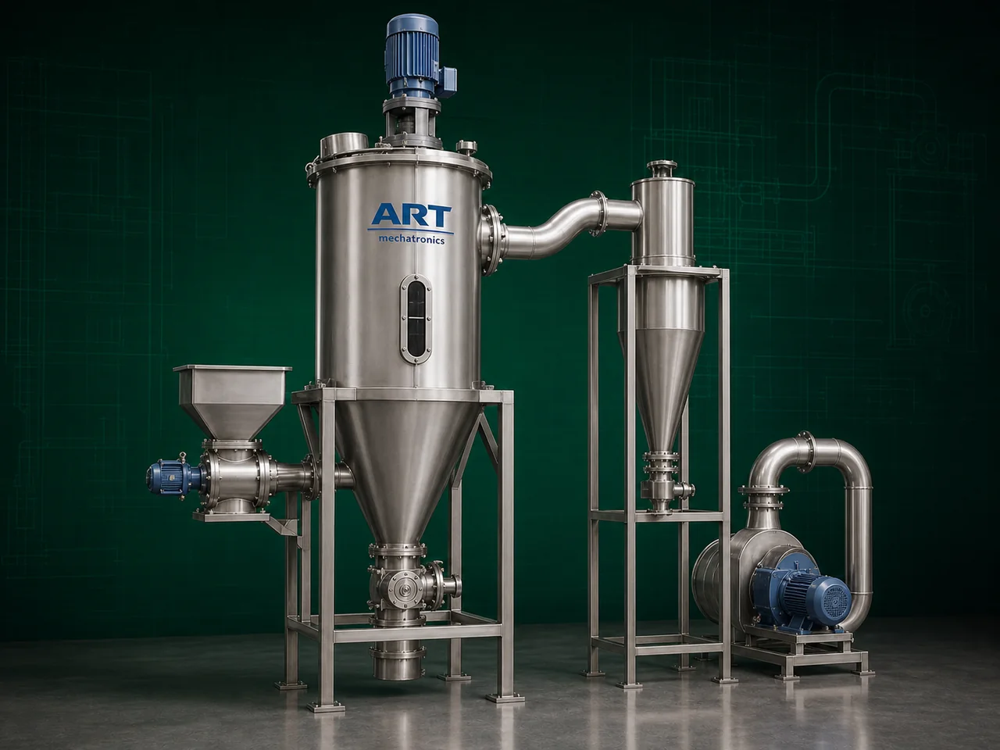

Air Classifier Machine (Industrial Fine Powder Classification & Separation System)
An Air Classifier Machine, also known as an Industrial Air Classifier or Fine Powder Classification System, is an advanced industrial equipment designed for precise separation and classification of powders, particles, granules, and fine materials based on particle size, density, and aerodynamic properties.

About the Air Classifier
The machine uses a combination of:
- Controlled airflow
- Centrifugal force
- Particle velocity separation
- Dynamic classification technology
to separate fine and coarse particles with high accuracy.
Air classifier machines are widely used in industries such as:
Food processing
Pharmaceuticals
Chemicals
Minerals
Cement industries
Pigment processing
Fly ash processing
Ceramic industries
Battery material processing
where ultra-fine powder classification and precise particle control are critical.
The machine is especially suitable for:
- Fine powder separation
- Micron particle classification
- Ultra-fine grinding systems
- Dust separation
- Mineral classification
- Powder grading applications
ART Mechatronics offers high-performance air classifier machines, engineered for high classification efficiency, energy-saving operation, precise particle control, and reliable industrial performance.
Working Principle of Air Classifier Machine
Fine powders or particles are fed into air classification chamber
High-speed airflow generated by blower or fan system Particles become suspended in air stream
Creates dynamic particle separation environment
Rotating classifier wheel separates particles based on: Size Weight Aerodynamic behavior
Fine particles carried with airflow Heavier coarse particles rejected separately
Cyclone separator or dust collector recovers classified fine material
Fine and coarse particles discharged separately for further processing
Types of Air Classifier Machines
- 1. Dynamic Air Classifier
Uses:
- High-speed classifier wheel
- Adjustable particle cut size for precision fine powder classification.
- 2. Static Air Classifier
Uses: ✔ Fixed airflow geometry for simpler separation applications.
- 3. Turbo Air Classifier
Provides:
- Ultra-fine particle separation
- High classification accuracy
- 4. Air Classifier Mill
Combines:
- Grinding
- Air classification in single integrated machine.
- 5. Multi Wheel Air Classifier
Suitable for: ✔ Large-scale industrial powder processing plants
- 6. Closed Circuit Air Classifier System
Works with:
- Pulverizers
- Grinding mills
- Micronizing systems for continuous fine powder production.
Industries Using Air Classifier Machine
⚗️ Chemical Industry Chemical powder classification ⛏️ Mineral Industry Calcium carbonate and mineral separation 💊 Pharmaceutical Industry Fine API powder classification 🍃 Food Processing Industry Fine spice and powder grading 🏗️ Cement & Fly Ash Industry Fine particle separation 🎨 Pigment & Paint Industry Pigment particle classification 🔋 Battery Material Industry Fine conductive powder separation 🏺 Ceramic Industry Fine ceramic powder processing
Features & Advantages
- High precision fine powder classification
- Adjustable particle cut size
- Ultra-fine particle separation capability
- Energy-efficient operation
- Continuous industrial processing
- Dust-free closed circuit operation available
- Heavy-duty industrial construction
- Low maintenance requirement
- High production efficiency
Technical Highlights
Classification Technology: Airflow separation Centrifugal classification Dynamic wheel separation Particle Size Range: Micron to fine powder classification Construction: Stainless Steel / Mild Steel Integrated Systems: Cyclone separator Dust collector Blower system Operation: Manual Semi-automatic Fully automatic PLC-based
Turnkey Air Classification Solutions
ART Mechatronics offers: Complete air classification systems Pulverizer and grinding integration Cyclone and dust collection systems Pneumatic conveying integration Installation & commissioning After-sales service & AMC
Why Choose Art Mechatronics
Expertise in industrial powder classification systems Customized solutions for precision industries High-performance and durable machine construction Energy-efficient and reliable industrial designs Proven industrial performance across sectors
Applications
Chemical Processing Plants Mineral Processing Industries Pharmaceutical Manufacturing Units Food Processing Facilities Cement & Fly Ash Plants Pigment & Ceramic Industries
Industries that use the Air Classifier
Related Cleaning, Sorting & Grading machines
Get pricing & specs for the Air Classifier
Share the product, target capacity, current process and plant location. These details help our engineers discuss the right machine or line configuration.
One partner, from design to start-up
ART Mechatronics designs, manufactures, installs and commissions your Air Classifier solution with regional presence in India, UAE and Thailand.